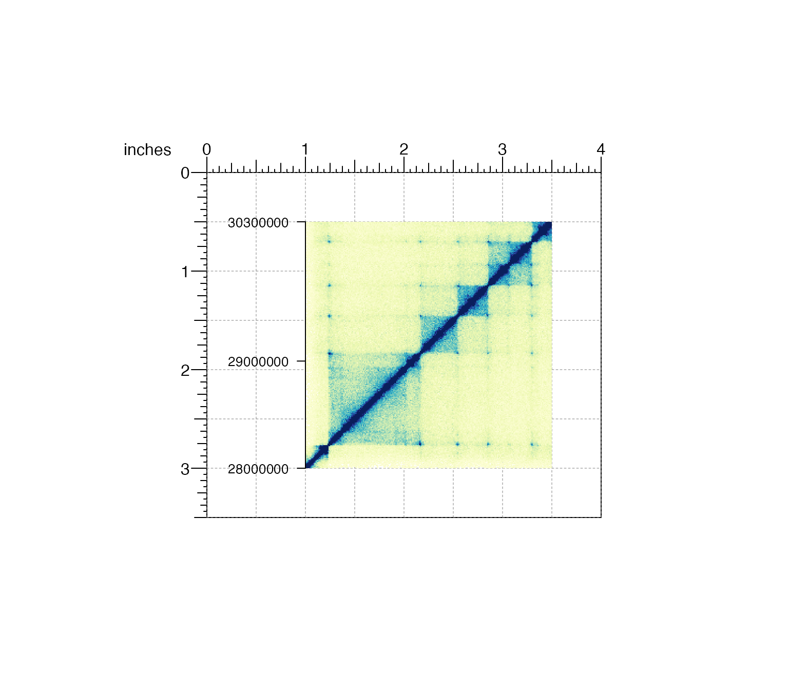
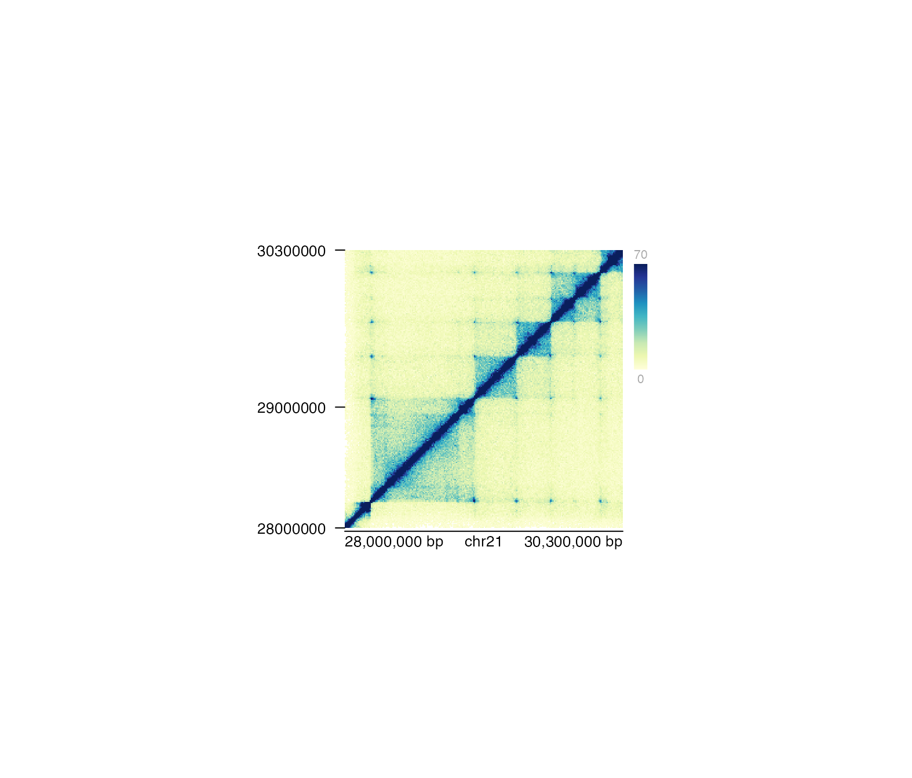

Add a y-axis to a plot
bb_annoYaxis( plot, at = NULL, label = TRUE, main = TRUE, scipen = 999, axisLine = FALSE, params = NULL, ... )
Arguments
| plot | Plot object to annotate with y-axis. |
|---|---|
| at | A numeric vector of y-value locations for tick marks. |
| label | A logical value indicating whether to draw the labels on the tick marks, or an expression or character vector which specify the labels to use.
If not logical, must be the same length as the |
| main | A logical value indicating whether to draw the y-axis at the left of the plot. Default value is
|
| scipen | An integer indicating the penalty to be applied when deciding to print numeric values in fixed or exponential notation. Default value is |
| axisLine | A logical value indicating whether to show the axis line. Default value is |
| params | An optional bb_params object containing relevant function parameters. |
| ... | Additional grid graphical parameters. See gpar. |
| gp | Grid graphical parameters. See gpar. |
Value
Returns a bb_yaxis object containing relevant grob information.
Examples
## Load Hi-C data data("bb_imrHicData") ## Create BentoBox page bb_pageCreate(width = 4, height = 3.5, default.units = "inches")## Plot and place a square Hi-C plot hicPlot <- bb_plotHicSquare(data = bb_imrHicData, resolution = 10000, zrange = c(0, 70), chrom = "chr21", chromstart = 28000000, chromend = 30300000, x = 1, y = 0.5, width = 2.5, height = 2.5, just = c("left", "top"), default.units = "inches")#>#>## Add standard y-axis to Hi-C plot bb_annoYaxis(plot = hicPlot, at = c(28000000, 29000000, 30300000), gp = gpar(fontsize = 8))#>